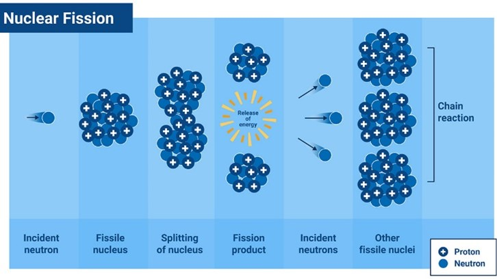

Table of Contents |
|---|
| Abstract |
| Introduction |
| What is nuclear energy |
| What are the pros of nuclear energy |
| What are the drawbacks of nuclear energy |
| Conclusion |
| References |
Nuclear energy is an important component in the energy landscape, having a mix of great benefits but notable draw backs. There two ways how nuclear energy can be produced one being fission and one being fusion, fission being the more common and popular one. Nuclear energy has Its benefits being very reliable, being safer that fossil fuels and how it creates many jobs. However, it notably has its drawbacks them being its expensive to start up meaning not every country can do it, can cause a massive accident and it produces hazardous waste which is not good for the environment.
Nuclear energy has been a hot topic in many conversations about sustainable energy and climate change and many people have different opinions on it. In this article I will be talking about what nuclear energy is and the benefits and drawbacks of it and give a conclusion on if I think it is the right move going forward in producing energy.
The definition of nuclear energy is the energy in the nucleus, or core, of an atom (1). This type of energy can be generated through two different methods either from nuclear fission or nuclear fusion. Beginning with nuclear fission the definition being a reaction where the nucleus of an atom splits into two or more smaller nuclei, while releasing energy (2), this is the most common way of how nuclear energy is formed. In figure 1 we can see a step-by-step process of how nuclear fission occurs. Wear as the other way being uncommon this is nuclear fusion the definition being when nuclei fuse together (2).

figure 1 the process of nuclear fission
The first pro of nuclear power Is that it is a very reliable source of energy compared to other sources, this is because nuclear power plants can be used and run all the time as it is not affected by weather compared to other energy sources. Nuclear power plants produce their maximum power output more often (93% of the time) (3) than any other energy source. Some examples of reliant sources to weather are solar which requires sun light; wind turbines which require wind and hydro power which require constant flow of water. The second pro of nuclear energy is quite an important one is that it is much safer than fossil fuels this is because “coal and oil act as ‘invisible killers’ and are Responsible for 1 in 5 deaths worldwide ”(4) this is clearly a big problem as in 2018 8.7 million people died globally(4).wear as nuclear has taken many less lives since being used, there has only been three accidences that have cause public alarm. Only one of them leading to directs deaths that bring the 1986 disaster in Chernobyl. The third and last pro of nuclear energy that I am going to talk about is how it creates many jobs for countries for example in the US it has created “nearly 100,000 in high-quality, long-term jobs”(5) and if counting secondary jobs “475,000”(5).This is because each power plant on average employs “500 to 800 workers”(5) and also in the making of a nuclear plant it can take up to “7,000” workers. This helps the economy a lot as more people working and working high paying jobs means more tax goes to the government which can then be re invested into country (energy sage)
The first drawback of nuclear energy is that it is expensive to start up as they are very dangerous, and a lot of money needs to spend to make sure it is as safe as it can be cause if not to can cause many problems. The actual nuclear plant takes up a lot of material to be built and it takes a lot of workers to be built. It cost billions to be built for example Hinkley point C is set to cost “46 billion” (6) pounds. Also adding on to the cost is when a nuclear plant becomes inactive it cost a lot of money to dismantle it and furthermore is cost money to safely dispose of all the radioactive waste. The second drawback of nuclear energy is that is if an accident does occur it can be catastrophic and deadly for example the 1986 disaster in Chernobyl where “31” (7) people died also it is believed that a further “4,000” (7) deaths could be added cause of the exposer to the radioactive waste. Another example of a big accident is in 2011 when the tsunami hit the coast of Japan it disabled the cooling system meaning that the cores melted this released a lot of radioactivity into the atmosphere and into oceans this caused “100,000” (8) to evacuate their homes. The third drawback of nuclear energy is that the nuclear waste produce is hard to disposes can will last for thousands of years so it needs to be very safely disposed of this cost a lot of money and if it goes wrong to can cause a lot of problems for example it can contaminate the environment which can mean people will have to evacuate.